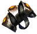

Открыть в интерактивной вики →
| Требуемый уровень | 45 |
|---|---|
| Редкость | Психорар |
| Улучшения | звёзды, орбы, осколки |
| Тип | Перстни |
| Цена | 450 000 |
| Ремонт | 180k |
| Заряды | 3000 |
| Вместимость дрифов | 8 |
| Требуемая ловкость | 45 |
| Сила | 12 |
| Ловкость | 20 |
| Здоровье | 80 |
| Выносливость | 50 |